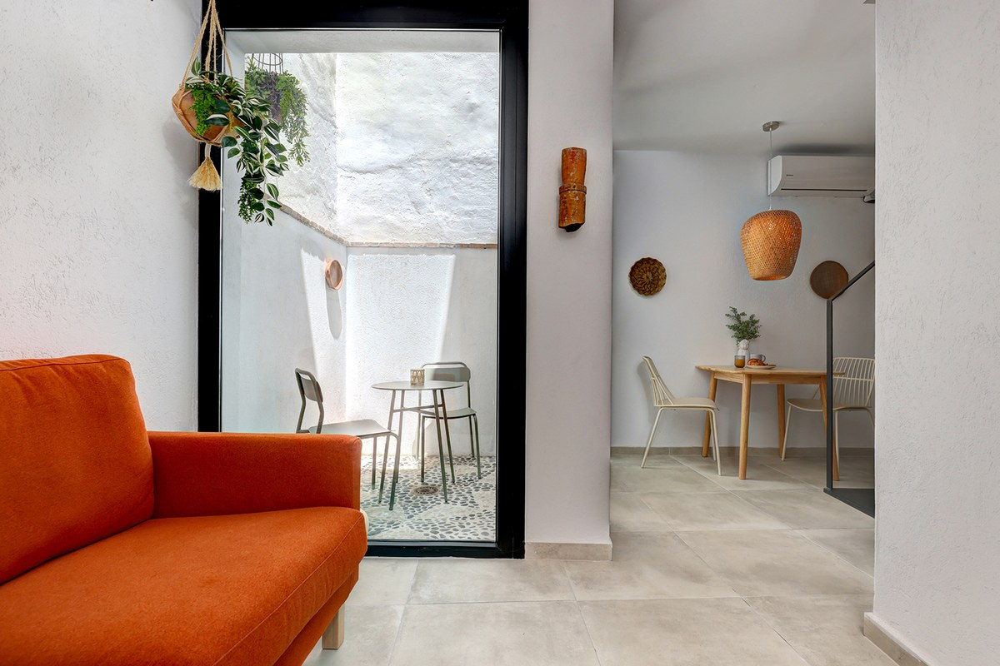
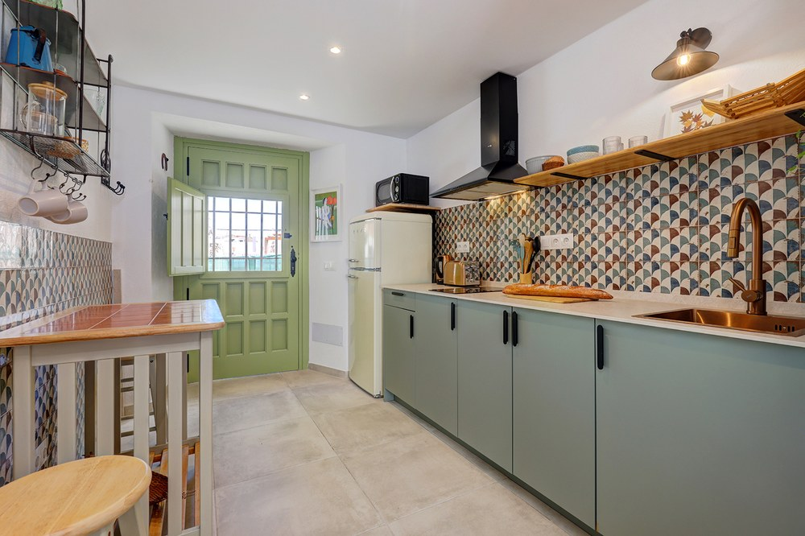
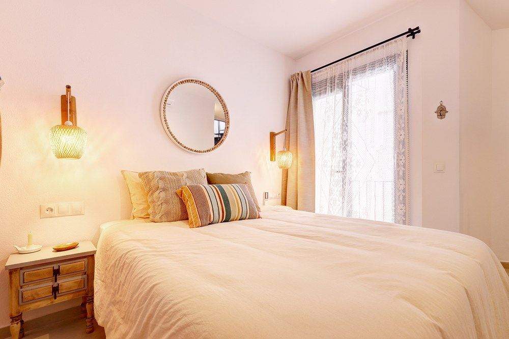
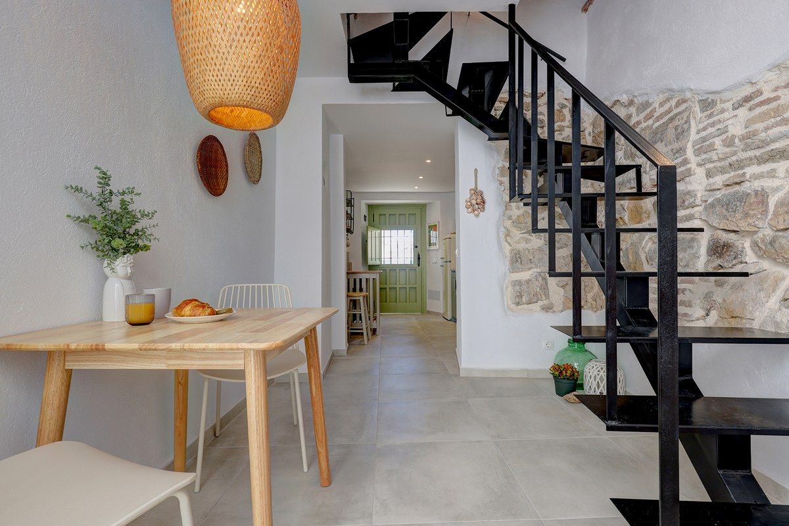

🏡 Self Check-in Guide

🔑 Access

🏠 The House


📶 Wi-Fi
Network: Sirena12
Password: estepona
❄️ Air Conditioning & Heating
🚗 Parking
🛒 Supermarkets
📍 Local Guide
📞 Contact
Leandro · +34 684 335 725
😊 Enjoy your stay!
